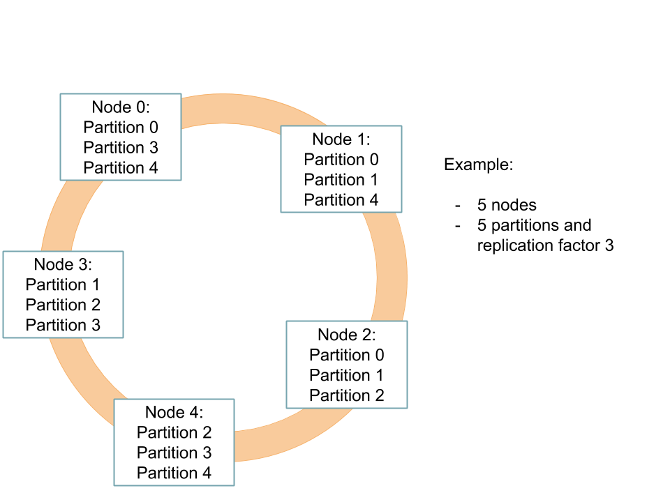

Setting up a Zeebe cluster
To set up a cluster, you need to adjust the cluster section in the Zeebe configuration file.
Below is a snippet of the default Zeebe configuration file:
---
cluster:
# This section contains all cluster related configurations, to setup a zeebe cluster
# Specifies the unique id of this broker node in a cluster.
# The id should be between 0 and number of nodes in the cluster (exclusive).
#
# This setting can also be overridden using the environment variable ZEEBE_BROKER_CLUSTER_NODEID.
nodeId: 0
# Controls the number of partitions, which should exist in the cluster.
#
# This can also be overridden using the environment variable ZEEBE_BROKER_CLUSTER_PARTITIONSCOUNT.
partitionsCount: 1
# Controls the replication factor, which defines the count of replicas per partition.
# The replication factor cannot be greater than the number of nodes in the cluster.
#
# This can also be overridden using the environment variable ZEEBE_BROKER_CLUSTER_REPLICATIONFACTOR.
replicationFactor: 1
# Specifies the zeebe cluster size. This value is used to determine which broker
# is responsible for which partition.
#
# This can also be overridden using the environment variable ZEEBE_BROKER_CLUSTER_CLUSTERSIZE.
clusterSize: 1
# Allows to specify a list of known other nodes to connect to on startup
# The contact points of the internal network configuration must be specified.
# The format is [HOST:PORT]
# Example:
# initialContactPoints : [ 192.168.1.22:26502, 192.168.1.32:26502 ]
#
# To guarantee the cluster can survive network partitions, all nodes must be specified
# as initial contact points.
#
# This setting can also be overridden using the environment variable ZEEBE_BROKER_CLUSTER_INITIALCONTACTPOINTS
# specifying a comma-separated list of contact points.
# Default is empty list:
initialContactPoints: []
# Allows to specify a name for the cluster
# This setting can also be overridden using the environment variable ZEEBE_BROKER_CLUSTER_CLUSTERNAME.
# Example:
clusterName: zeebe-cluster
Example
In this example, we will set up a Zeebe cluster with five brokers. Each broker needs to get a unique node id.
To scale well, we will bootstrap five partitions with a replication factor of three. For more information about this, take a look into the clustering section.
The clustering setup will look like this:

Configuration
The configuration of the first broker could look like this:
---
cluster:
nodeId: 0
partitionsCount: 5
replicationFactor: 3
clusterSize: 5
initialContactPoints:
[
ADDRESS_AND_PORT_OF_NODE_0,
ADDRESS_AND_PORT_OF_NODE_1,
ADDRESS_AND_PORT_OF_NODE_2,
ADDRESS_AND_PORT_OF_NODE_3,
ADDRESS_AND_PORT_OF_NODE_4,
]
For the other brokers, the configuration will slightly change:
---
cluster:
nodeId: NODE_ID
partitionsCount: 5
replicationFactor: 3
clusterSize: 5
initialContactPoints:
[
ADDRESS_AND_PORT_OF_NODE_0,
ADDRESS_AND_PORT_OF_NODE_1,
ADDRESS_AND_PORT_OF_NODE_2,
ADDRESS_AND_PORT_OF_NODE_3,
ADDRESS_AND_PORT_OF_NODE_4,
]
Each broker needs a unique node id. The ids should be in the range of zero and clusterSize - 1. You need to replace the NODE_ID placeholder with an appropriate value.
Additionally, the brokers need an initial contact point to start their gossip conversation. Make sure you use the address and management port of another broker. You need to replace the ADDRESS_AND_PORT_OF_NODE_0 placeholder.
To guarantee a cluster can properly recover from network partitions, it is currently required that all nodes be specified as initial contact points. It is not necessary for a broker to list itself as an initial contact point, but it is safe to do so, and likely simpler to maintain.
Partitions bootstrapping
On bootstrap, each node will create a partition matrix.
This matrix depends on the partitions count, replication factor and the cluster size. If you completed the configuration correctly and used the same values for partitionsCount, replicationFactor, and clusterSize on each node, all nodes will generate the same partition matrix.
For the current example, the matrix will look like the following:
| Node 0 | Node 1 | Node 2 | Node 3 | Node 4 | |
|---|---|---|---|---|---|
| Partition 0 | Leader | Follower | Follower | - | - |
| Partition 1 | - | Leader | Follower | Follower | - |
| Partition 2 | - | - | Leader | Follower | Follower |
| Partition 3 | Follower | - | - | Leader | Follower |
| Partition 4 | Follower | Follower | - | - | Leader |
The matrix ensures the partitions are well distributed between the different nodes. Furthermore, it guarantees each node knows exactly which partitions it has to bootstrap and for which it will become the leader at first (this could change later, if the node needs to step down for example.)
Keep alive intervals
It's possible to specify how often Zeebe clients should send keep alive pings. By default, the official Zeebe clients (Java and Go) send keep alive pings every 45 seconds. This interval can be configured through the clients' APIs and through the ZEEBE_KEEP_ALIVE environment variable. When configuring the clients with the environment variable, the time interval must be expressed a positive amount of milliseconds (e.g., 45000).
It's also possible to specify the minimum interval allowed by the gateway before it terminates the connection. By default, gateways terminate connections if they receive more than two pings with an interval less than 30 seconds. This minimum interval can be modified by editing the network section in the respective configuration file or by setting the ZEEBE_GATEWAY_NETWORK_MINKEEPALIVEINTERVAL environment variable.